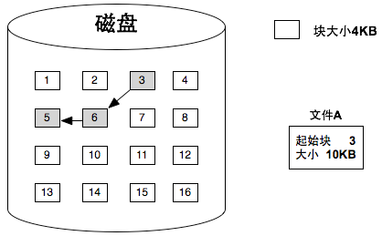
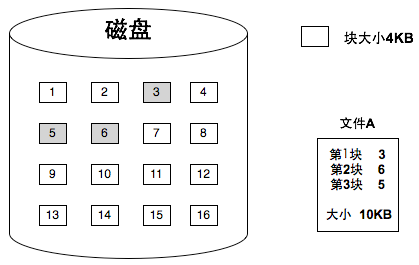
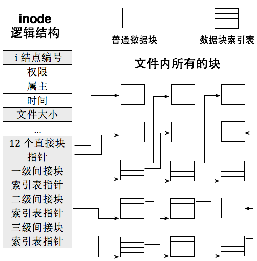
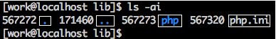
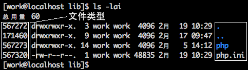
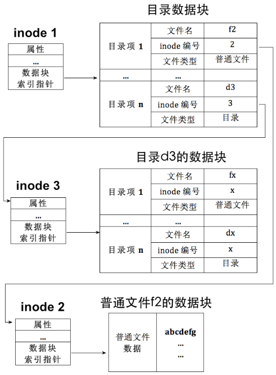
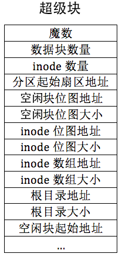
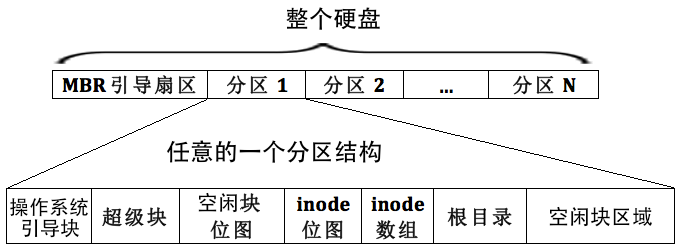
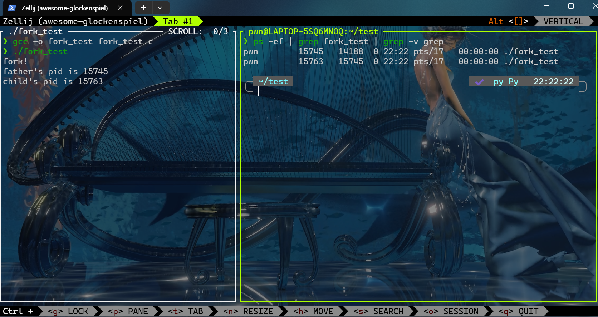
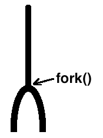

扩展文件系统
0x0f 实现硬盘分区
Tip
这一节中关于硬盘分区是比较老的知识，现代磁盘分区已经不这么做了，等以后写现代操作系统的时候再补充罢（挖个坑）
之前有简单介绍过磁盘的物理分区方式，可以看这里，但当时的操作只是简单的启动，并不成体系。为了实现文件系统，我们必须建立一套完整的方法，也即是**磁盘驱动程序**
有关于磁盘物理构成的知识之前介绍过了，简单说一下
- 盘片：布满磁性介质的小光盘
- 扇区：硬盘读写的基本单位，在磁道上均匀分布。通常一个扇区为512字节大小
- 磁道：盘片上的一个个同心园环就是一个个磁道
- 磁头：一个读取磁盘的机械臂，每个盘面都存在一个磁头，用来读取该盘面上的磁盘信息
- 柱面：由不同盘面的相同磁道构成的一个圆柱面就叫住面，这里也是为了提升咱们的IO读写速度
- 分区：由多个编号连续的柱面组成的，这里注意一个柱面不能包含多个分区
可以得出如下公式 $$ 硬盘容量 = 单片容量×磁头数 \ 单片容量 = 每磁道扇区数×磁道数×512字节 $$
这里介绍**磁盘分区表(DPT)**
同样，这个表是由多个分区元信息汇成的表，表中每一项都对应一个分区，主要记录各个分区的起始扇区地址，大小界限等
最初的磁盘分区表位于 MBR 引导扇区中，该扇区位于 0 盘 1 道 1 扇区（物理扇区编号从 1 开始，逻辑扇区地址 LBA 从 0 开始），也就是硬盘最开始的扇区，扇区大小为 512 字节，这 512 字节内容包括以下内容
[0x000 ~ 0x1BD] 主引导程序（Bootloader 第1阶段）
[0x1BE ~ 0x1FD] 分区表（共4项，每项16字节）
[0x1FE ~ 0x1FF] 结束标志 0x55AA
在早期的硬盘分区管理中，MBR（Master Boot Record） 分区表只能记录 最多 4 个主分区。这在上世纪硬盘容量还不大的时候是足够的，但随着存储空间不断增长，4 个分区已经无法满足需求，于是便引入了 扩展分区（Extended Partition） 的概念。
- 为什么需要扩展分区
扩展分区的设计初衷很简单：在不破坏原有 MBR 结构的前提下，突破 4 个主分区的限制。它本身并不直接存放数据，而是一个 “容器分区”，用于容纳更多的 逻辑分区（Logical Partition）。
在 MBR 分区表中，最多只能有一个分区项用于扩展分区，其余分区项依然可以是普通主分区。扩展分区内部的结构与普通分区不同，它需要额外的分区记录机制——EBR（Extended Boot Record，扩展引导记录）。
- EBR 与逻辑分区的组织方式
EBR 的作用类似于 MBR 中的分区表，但它专门用来记录扩展分区内的逻辑分区信息。
每个 EBR 包含两条分区表项：
- 当前逻辑分区的起始地址与大小
- 下一个逻辑分区的 EBR 地址（如果还有下一个逻辑分区）
这种结构形成了一条 链表：
- 第一逻辑分区的 EBR 位于扩展分区的起始位置。
- 通过 EBR 中的“下一分区”指针，可以依次找到后续的逻辑分区。
- 最后一个逻辑分区的 EBR 中，第二条分区表项为空（0），表示链表结束。
graph TD
MBR[MBR 分区表]:::mbr --- P1[主分区1]:::primary
MBR --- P2[主分区2]:::primary
MBR --- P3[主分区3]:::primary
MBR --- EXT[扩展分区]:::extended
EXT --- OBR[OBR<br/>记录逻辑分区1信息]:::obr --- L1[逻辑分区1]:::logical
L1 --- EBR2[EBR2<br/>记录逻辑分区2信息]:::ebr --- L2[逻辑分区2]:::logical
L2 --- EBR3[EBR3<br/>记录逻辑分区3信息]:::ebr --- L3[逻辑分区3]:::logical
classDef mbr fill:#FFD700,stroke:#333,stroke-width:1px;
classDef primary fill:#87CEFA,stroke:#333,stroke-width:1px;
classDef extended fill:#FFA07A,stroke:#333,stroke-width:1px;
classDef obr fill:#90EE90,stroke:#333,stroke-width:1px;
classDef ebr fill:#98FB98,stroke:#333,stroke-width:1px;
classDef logical fill:#D8BFD8,stroke:#333,stroke-width:1px;关于磁盘部分不想记录很多，毕竟目前的用途已经不大了，暂时放在这里罢
0x10 文件系统
inode、简介块索引表、文件控制块FCB
在磁盘的领域中，块（block）**是文件系统管理数据的基本单位：虽然硬盘的物理读写单位是**扇区，但为了减少频繁的访问，操作系统通常会将多个扇区组合位一个更大的**块**。在Linux或Unix中，块是文件系统的读写单位，这意味着即便文件只有1B，也将占用一个完整的块
Tip
Windows中，我们一般称为**簇**
但是当文件大于一个块的时候，多个块该如何组织在一起呢？
FAT链式结构
早期的FAT(File Allocation Table)文件系统中，文件的多个块采用**链式结构**来组织。在每个块的末尾保存下一个块的地址，这样块与块之间可以像链表一样串联。好处显而易见：文件的块可以分散在磁盘的任意位置，不必连续存放，这样可以有效利用磁盘零散的空间，提高空间利用率
但缺点也显而易见：当你要访问文件的第N个块时，必须从第一个块开始，一路顺着地址链找到目标块，这中访问模式在逻辑上很低效，并且硬盘速度本身就不快，更会增加寻道次数，效率极其低下

inode索引结构
相对而言，Unix采用**索引结构**来管理文件，也就是为文件的所有数据块建立一张索引表，表中每一项直接记录对应数据块的物理地址。这样要访问第N个块，只需要查表即可，随机访问性能大大提升
而在 Unix/Linux 文件系统中，这个索引结构的具体实现就是 inode(index node)。每个文件都对应一个 inode，里面保存了文件的元信息（权限、属主、时间戳、文件大小等）以及数据块的位置。inode 本质上时文件系统中的一种**文件控制块（FCB）**，只不过FCB是一个泛称

直接块与间接块
inode 中并不是直接存下文的所有块地址，因为索引表也要占空间。为了平衡性能与存储开销，Unix采取了分级设计*（世界的尽头是分级）*
- inode 前 12 个指针称为**直接块**，直接指向文件数据块
- 第 13 个指针指向**一级间接块索引表**，它本身是一个存放块地址的表，一个表可以记录 256 个数据块
- 第 14 个指针指向**二级间接块索引表**，它的每个表项记录的是一个一级间接块的地址，可以记录 \(256*256\) 个数据块
- 第 15个指针指向**三级间接块索引表**，能索引\(256*256*256\)个数据块
通过这种方式，文件既能在小尺寸下快速访问，又能在需要时支持极大的容量，理论上可以轻松容纳超大文件。当然，如果真有超过三级间接索引能力的文件，那只能分割成多个文件来处理。

目录项与目录简介
刚刚有说过，inode记录了文件大部分元信息——权限、属主、大小、时间戳，以及数据块的地址。但是这里缺没有存放**文件名**，用户最关心的属性
既然我们通过文件名访问文件，为什么不直接把文件名放到inode里呢？
对于现代文件系统来说没有必要：文件系统使用inode来标识和管理文件的，只要有了inode，就能定位到文件的实际数据块。而文件名对于文件系统来说并不重要
但对于人类用户来说，记inode有点神经病了，还是习惯用文件名去找文件。这就引出了一个新问题：文件系统是如何把文件名和 inode 联系起来的呢？
目录也是文件
回想一下，我们平时访问文件，不论是执行一个程序，还是打开一个文档，都是通过路径来的。而路径的每一层，其实都是一个**目录**。在 Linux 中，目录和普通文件一样，也是用 inode 来表示的，所以目录本质上也是一种文件，只不过它的内容不是数据，而是**目录项（directory entry）**。
这里有个关键点：
- 如果一个 inode 表示的是普通文件，那么它指向的数据块里存的是这个文件的内容。
- 如果一个 inode 表示的是目录文件，那么它指向的数据块里存的就是一组目录项。
什么是目录项
目录项是一个“文件列表”的条目，每个条目至少包含三个信息：
- 文件名
- 文件类型（目录/普通文件等）
- 文件对应的 inode 编号
它的作用有两个：
- 绑定文件名和 inode，让用户可以通过文件名找到 inode
- 标识文件类型，告诉系统该 inode 对应的是目录还是普通文件
你在 Linux 里执行 ls -i 时，看到的就是目录项中的文件名和 inode 编号的对应关系；执行 ls -l 时，额外看到的权限、属主等信息来自 inode 本身。
 |
 |
|---|---|
| 目录中的目录项 | 目录项信息及 inode 信息 |
有了目录项，文件系统查找文件的过程就很清晰了：
- 在当前目录中找到匹配文件名的目录项
- 从目录项中获取该文件的 inode 编号
- 根据 inode 编号去 inode 表（inode 数组）里找到对应的 inode
- 读取 inode 中记录的各个数据块地址，进而获取文件内容
小小总结一下
- 每个文件都有自己单独的inode，inode 是文件实体数据块在文件系统上的元信息。
- 所有文件的inode 集中管理，形成inode 数组，每个inode 的编号就是在该inode 数组中的下标。
- inode 中的前12 个直接数据块指针和后3 个间接块索引表用于指向文件的数据块实体。
- 文件系统中并不存在具体称为“目录”的数据结构，同样也没有称为“普通文件”的数据结构，统一用同一种inode 表示。inode 表示的文件是普通文件，还是目录文件，取决于inode 所指向数据块中的实际内容是什么，即数据块中的内容要么是普通文件本身的数据，要么是目录中的目录项。
- 目录项仅存在于inode 指向的数据块中，有目录项的数据块就是目录，目录项所属的inode 指向的所有数据块便是目录。
- 目录项中记录的是文件名、文件inode 的编号和文件类型，目录项起到的作用有两个，一是粘合文件名及inode，使文件名和inode 关联绑定，二是标识此inode 所指向的数据块中的数据类型（比如是普通文件，还是目录，当然还有更多的类型）。
- inode 是文件的“实质”，但它并不能直接引用，必须通过文件名找到文件名所在的目录项，然后从该目录项中获得inode 的编号，然后用此编号到inode 数组中去找相关的inode，最终找到文件的数据块。
目录项和inode的关系如下图：

!!!note “死循环”的错觉与根目录的作用
有人可能会想：要找到文件的数据块，需要 inode；要找到 inode，需要目录项；而目录项又存在于目录文件的数据块中，这数据块又需要 inode 来找——这不是陷入死循环了吗？
其实不会。文件系统总得有个“起点”，这个起点就是**根目录 `/`**。每个分区都有自己的根目录，而且在文件系统格式化时，根目录所在数据块的地址是固定写死的。查找文件时，从根目录开始递归进入子目录，就能最终找到任何文件。
超级块与文件系统布局
在前面已经介绍了 inode、目录项**以及**根目录，这些是构建文件系统的基础。而此处将要介绍**超级块**的概念。它是文件系统运行的“总指挥”
**超级块**可以认为是保存文件系统元信息的元信息，类似于文件系统的配置文件。作用如下：
- 记录文件系统的整体结构和配置信息
- 让系统能够快速定位重要数据结构（如 inode 数组、根目录、位图等）
- 用来识别文件系统的类型（通过魔数）
而我们实现最简文件系统，超级块中存储可以如下：
- inode数组地址以及大小
- 每个文件有一个inode
- inode数组长度 = 分区最大文件数（格式化时确定）
- inode位图地址及大小
- 用位图管理inode的使用情况
- 根目录地址及大小
- 每个分区根目录位置不统一，所以必须记录
- 空闲块位图地址及大小
- 用位图管理空闲数据块的使用情况
- 魔数
- 用来区分文件系统类型（ext2，ext4，FAT32）

我们参考ext2文件系统，可以做出如下文件系统布局，不过少了一些块组和块组描述符

文件系统的主要工作就是资源管理，而跟踪资源状态最常用的方法就是位图
创建文件系统的时候，现在内存中生成这些位图，再把它们写入硬盘中，这个过程就叫做**持久化**。
而这样做的原因是：分区真正使用是在挂载的时候，而挂载之前内存里是没有位图的，所以必须实现把它们存到磁盘上，将来挂载分区时再从磁盘读回来放到内存中。
由于内存是易失的，断电就会丢失数据，所以哪怕位图只改动了一个位，也要立刻同步回磁盘。位图的大小按扇区对齐，最后一个扇区往往会有多余的位，这些位并不对应真实资源，如果不处理，可能会被误分配导致破坏数据，所以在持久化前要把这些多余位初始化为1，标识已经占用，避免后续使用
而挂载分区的本质，就是把该分区的文件系统元信息（包括超级块，位图等）从磁盘加载到内存，用内存的数据结构来跟踪资源状态，写操作再及时同步到硬盘。
文件描述符
在 Linux 中，几乎所有文件操作都绕不开一个概念——文件描述符（File Descriptor，FD）
简单来说，文件描述符就是一个整数，它是当前进程 文件描述符数组 的下标。Linux 会在每个进程的 PCB（进程控制块）中预先分配一个文件描述符数组，用于记录当前进程打开的文件
其中，前三个文件描述符是固定保留的：
0-> 标准输入(stdin)1-> 标准输出(stdout)2-> 标准报错(stderr)
Linux通过三层跳转从文件描述符找到磁盘数据块
| 层级 | 位置 | 作用 |
|---|---|---|
| 文件描述符数组 | 每个进程 PCB | 存放“文件表下标” |
| 文件表（全局） | 内核共享 | 保存 struct file，指向 inode |
| inode 队列（缓存） | 内核共享 | 保存文件存储信息，指向磁盘数据块 |
flowchart LR
fd["文件描述符 (int)"] --> fd_array["进程文件描述符数组"]
fd_array --> file_table["文件表 (struct file[])"]
file_table --> inode["inode 队列"]
inode --> disk["磁盘数据块"]
-
用 fd 在 文件描述符数组 找到文件表下标
-
用下标找到 文件表 中的
struct file -
通过
struct file的f_inode指针找到 inode -
inode 中有文件数据块的位置，最终访问磁盘
0x11 系统交互
fork介绍
fork函数原型为pid_t fork(void)，返回值为数字，可能是**子进程的pid**，可能是**0**，也可能是**-1**。
之所以会有 3 种返回值，是因为 Linux 中没有获取子进程 pid 的方法，因此为了让父进程获知自己的孩子是谁，
fork会给父进程返回子进程的 pid。子进程可以通过系统调用getpid来获知自己的父亲是谁，并且没有pid=0的进程，因此fork给子进程返回 0 ，从返回值上和父进程区别开来。如果fork失败，则返回 -1 ，没有子进程产生
这里有个很神秘的现象：fork执行一次会返回两次pid，可以看看下面这个例子
#include <unistd.h>
#include <stdio.h>
int main() {
printf("fork!\n");
sleep(5);
int pid = fork();
if (pid == -1) {
return 1;
}
if (pid) {
printf("father's pid is %d\n",getpid());
sleep(5);
return 0;
} else {
printf("child's pid is %d\n",getpid());
sleep(5);
return 0;
}
}
运行情况如下
ps -ef | grep fork_test | grep -v grep指令在运行test时执行

可以得出这样一个结论：fork后，由之前的一个进程变成了两个进程，也就是说，fork的作用是克隆进程。克隆出来的进程拥有独立的地址空间，两个地址执行的是独立且相同的代码，各自的指令中都包含第6行的fork调用，只是子进程是在fork函数返回之后才开始执行的，因此执行的是fork之后的代码
大致就像下面这张图，fork的中文意思“叉子”是很形象了

实现
这部分内容太多了，又大多是代码，不是很想介绍了~（懒狗）~
其实后面还有一部分关于管道的内容，但是这个有些太少了，通信可以单独拿出来学习一下的，以后完整的写一写罢